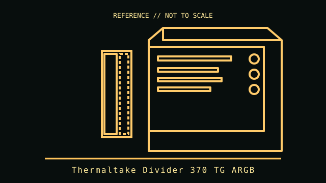

[ TOWER AND LEGACY DESKTOP CASES // IDENTIFIED ENCLOSURE ]
Thermaltake Divider 370 TG ARGB
2022 ATX mid-tower. A model-specific enclosure record with physical fit limits, revision notes and manufacturer references.

IDENTIFICATION: Confirm the chassis label, model suffix, revision and regional bundle. Manufacturer maximum clearances are conditional on fan, radiator, drive-cage and cable configurations; allow room for connectors and service access.
Recorded specifications
| Cataloged model | Thermaltake Divider 370 TG ARGB |
|---|---|
| Era / class | 2022 ATX mid-tower |
| Dimensions and component limits | Mini-ITX, microATX, ATX and E-ATX boards up to 330.2 mm wide; 491 × 220.3 × 469.1 mm (H × W × D). Maximum GPU length 400 mm, CPU cooler height 170 mm, and PSU length 230 mm. Three 120 mm ARGB PWM front fans are listed as included. |
| Revision / variant identification | The ARGB version includes front fans and vertical-GPU hardware on listed SKU; regional bundles should be checked, and a riser may be required for vertical installation. |
Compatibility and fit notes
The angled split side panel combines tempered glass and steel; install panels carefully and keep GPU cabling clear. E-ATX maximum width is constrained. Front/top radiator dimensions and fan stacks can reduce GPU or board clearance.
- Measure the exact GPU, CPU cooler, PSU, radiator and fan stack; nominal maximums may not be simultaneously usable.
- Check motherboard standoff locations, front-panel connectors, PSU cable routing, drive cages and expansion-slot alignment before assembly.
- Consult the applicable manual for screw locations, removable brackets, included hardware and fan/ARGB pinouts; do not force panels or boards into place.
Model-specific notes
The ARGB version includes front fans and vertical-GPU hardware on listed SKU; regional bundles should be checked, and a riser may be required for vertical installation.
Sources & further reading
- Thermaltake — Divider 370 TG ARGBManufacturer product page and technical specifications.
- Thermaltake Divider 370 TG ARGB user manual (ManualsLib mirror)Manual mirror for installation and configuration; manufacturer page remains the primary specification source.
Specifications describe the identified model family; validate the exact part number, revision and regional package against the manufacturer's manual before purchase or installation.